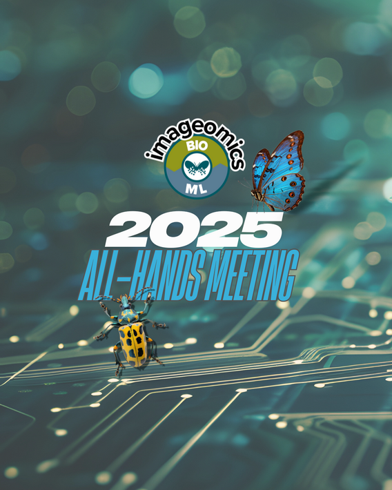

The Imageomics Institute at The Ohio State University is convening its 2025 All-Hands Meeting from April 16 to 18, bringing together researchers, students, and collaborators to advance the emerging field of imageomics. The event will be held at Pomerene Hall on Ohio State's campus.
The three-day gathering begins with "NextGen Day" on April 16, focusing on graduate students and early-career researchers. Activities include workshops on research communication and speed networking sessions to foster interdisciplinary collaboration.
On April 17, the "Community and Collaborators Day" will feature keynote presentations, lightning talks, and poster sessions, providing a platform for sharing recent advancements and fostering new partnerships. The meeting concludes on April 18 with strategic discussions aimed at shaping the future of imageomics research.
Imageomics integrates machine learning and computer vision to extract biological information from images, aiding in the study of biodiversity and conservation efforts. By making traits and phenotypes computable directly from images, researchers can gain insights into evolutionary patterns and ecological dynamics.
"Bringing researchers together from around the world once a year to reflect and strategize in person is not just beneficial; it is essential," said Tanya Berger-Wolf, director of the Imageomics Institute. "It allows us to share insights, tackle challenges collaboratively, and keep our community tightly knit and focused on our common goals."
The All-Hands Meeting serves as a cornerstone for the institute's mission, fostering a collaborative environment that accelerates scientific discovery and innovation in the field of imageomics.
For more information about the event, visit the archived Imageomics page.